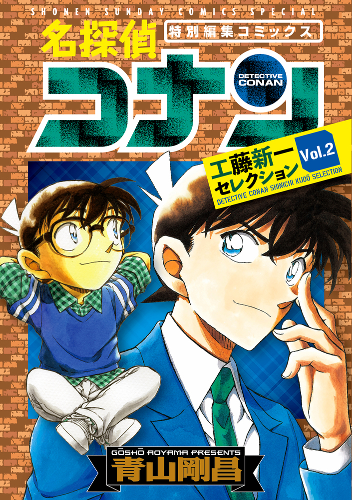
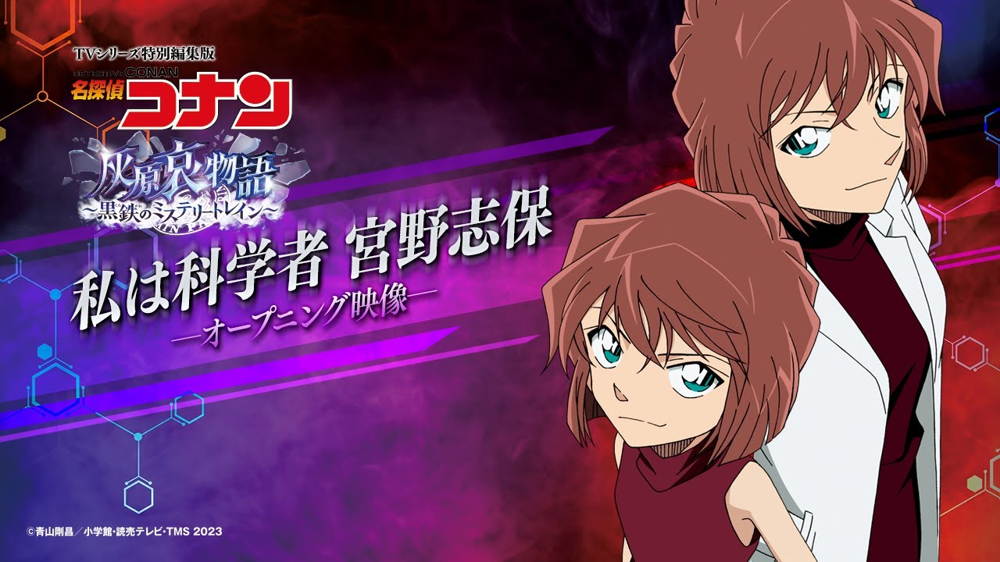

工藤新一
工藤新一
探偵物語: 工藤俊作
作家: 星新一
P.S.『探偵物語』(たんていものがたり)は、1979年9月18日から1980年4月1日まで日本テレビ系列で全27話が放送されたテレビドラマ。
江戸川コナン
小説家: 江戸川乱歩
イギリスの作家: コナン・ドイル
灰原哀
灰原哀
イギリス作家(P. D.James)作った探偵さん: Cordelia Gray
灰原哀
灰原哀の哀はね
実は「アイリーン・アドラー」から取ってるんです。
シャーロック・ホームズを唯一負かした“あの女”。
P.S アイリーン・アドラーは、コナン・ドイルによって発表された推理小説、シャーロック・ホームズシリーズに登場する架空の人物。
宮野志保
宮野
志保(ShiHo) => 星(HoShi)新一
シェリー / Sherry
工藤俊作: コーヒーにこだわり、好きな酒はシェリー。
工藤新一 = 工藤俊作 + 星新一
灰原哀 = 宮野志保(星新一) + シェリー (工藤俊作好きなお酒)
星新一 の お父さんである 星 一
星製薬(せいやく)の創業者であり、星薬科大学の創立者。
「東洋の製薬王」と呼ばれた